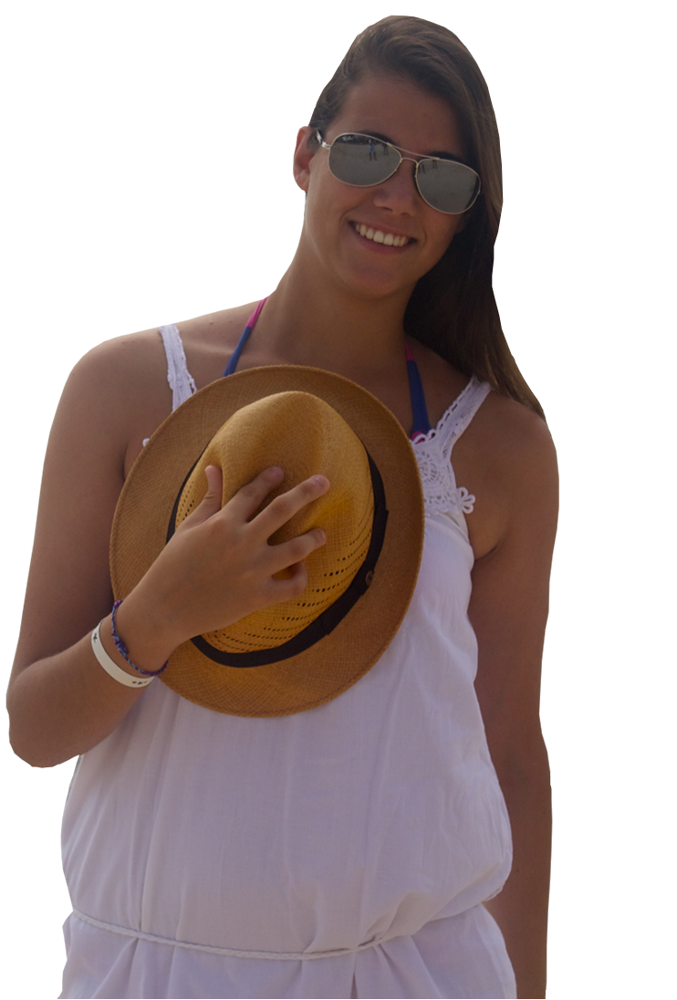

<!--
    Copyright (c) 2011, David Bengoa Rocandio
    All rights reserved.

    This program is licensed under the Chicken Dance License v0.2

    You should have received a copy of the license text with this
    software, along with instructions on how to perform the Chicken
    Dance.

    Full license: http://bengoarocandio.com/html5tweets/COPYING
    Chicken Dance instructions: http://bengoarocandio.com/html5tweets/DANCE
-->
<DOCTYPE html>
<html>
    <head>
        <meta http-equiv="content-type" content="text/html; charset=utf-8">
        <link rel="stylesheet" href="tweets.css"/>
        <title>15 de Lali</title>
    </head>
    <body>
        <canvas></canvas>
        
        <div id="load">
            Cargando tweets...
        </div>
        <div id="credits">
        </div>
        <script src="http://ajax.googleapis.com/ajax/libs/jquery/1.5.2/jquery.min.js" type="text/javascript"></script>
        <script type="text/javascript" src="tweets.js"></script>
    </body>
</html>
